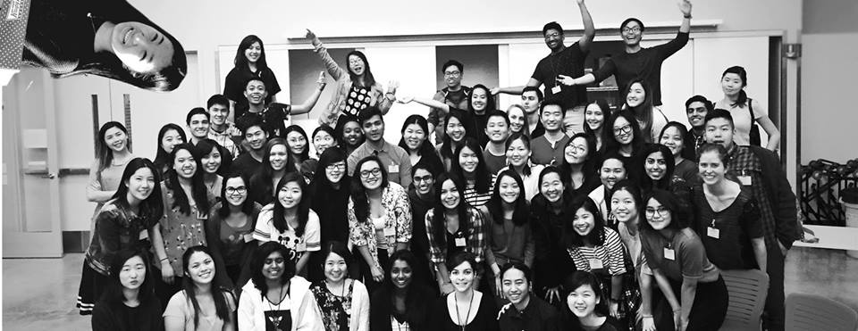
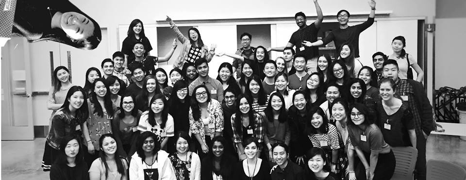

Introduction
Hey there! Thanks for visiting my platforms. I've had a blast getting to know you all this semester and am really excited at the opportunity to be next semester's Director of Technology.
Berkeley Innovation has grown a lot over the last few months. We've doubled membership, reorganized, and produced awesome work. It's time for our website to reflect the boss ass community we've become. Since our website is the face of our club, it's super important that fans, potential clients, potential sponsors, and even h8rs get to see what we're all about in a meaningful way. Over the summer months and over the course of Fall semester, I hope to match the design caliber of our website to the design caliber of our portfolio.
Furthermore, I'd love to work closely with the External Vice President to provide BI members with the best online and computer based resources out there. I hope to build on what we've accomplished this year with our Sketch partnership and User Testing Partnership to ensure BI has everything it needs to deliver top-notch work and grow personally and professionally.
Check out the sections below for more details about what I hope to accomplish as Director of Tech. If you're in a hurry here's the tl;dr:
 

My BI Story
Fall 2015
I joined BI in Fall 2015 when I decided I might as well give the whole design thing a shot. It was one of the best decisions of my life. Not only did I nurture my passion for and understanding of design, but I met so many awesome people who were wicked talented but still down to earth.
That semester, I worked on the myFinances page of CalCentral. It was a huge learning experience for me. My first user research and user testing experiences were on that project.
I also had the pleasure of participating in InnoD's CMYK with an all BI team (we won most creative!) All told, it was a great semester filled with learning and general awesomeness.
Spring 2016
This semester, I served as project manager for BI, in the hopes that I might take what I learned and help our teams succeed. Your work this semester has surprised and impressed me and I'm so glad to be part of what we're building.Our Website
As of today, our website looks like the image above. As a design club, I think the general community (including potential sponsors) holds us to a higher standard. The website has a lot of potential as a place for interesting, current, and useful content:
- A current portfolio of our work, displaying the contributions of our members and sponsors
- A blog depicting our activity as a club and community
- Resources for our members and the Berkeley Design community
- A clear and comprehensive description of our process
- Clear ways for clients and sponsors to get involved with what we do.
With some research, time, and creativity, I believe we can build a website that is truly
Our improved website will tell a more compelling story, encouraging better partnerships with clients and sponsors that will make our club sustainable. That means more money for the club and less money out of members' pockets (think free apparel, cheap retreat, all the great things.) BI deserves to be rewarded for its excellence and hard work, and I'd be honored to have the opportunity to make it so.
Peace,
Tim Guan